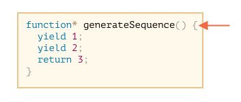
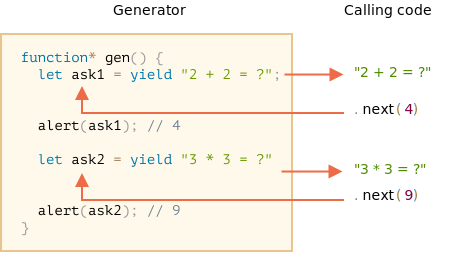

常规函数只会返回一个单一值（或者不返回任何值）。
而 Generator 可以按需一个接一个地返回（"yield"）多个值。它们可与 iterable 完美配合使用，从而可以轻松地创建数据流。
要创建一个 generator，我们需要一个特殊的语法结构：function*，即所谓的 "generator function"。
它看起来像这样：
function* generateSequence() {
yield 1;
yield 2;
return 3;
}Generator 函数与常规函数的行为不同。在此类函数被调用时，它不会运行其代码。而是返回一个被称为 "generator object" 的特殊对象，来管理执行流程。
我们来看一个例子：
function* generateSequence() {
yield 1;
yield 2;
return 3;
}
// "generator function" 创建了一个 "generator object"
let generator = generateSequence();
*!*
alert(generator); // [object Generator]
*/!*到目前为止，上面这段代码中的 函数体 代码还没有开始执行：

一个 generator 的主要方法就是 next()。当被调用时（译注：指 next() 方法），它会恢复上图所示的运行，执行直到最近的 yield <value> 语句（value 可以被省略，默认为 undefined）。然后函数执行暂停，并将产出的（yielded）值返回到外部代码。
next() 的结果始终是一个具有两个属性的对象：
value: 产出的（yielded）的值。done: 如果 generator 函数已执行完成则为 true，否则为 false。例如，我们可以创建一个 generator 并获取其第一个产出的（yielded）值：
function* generateSequence() {
yield 1;
yield 2;
return 3;
}
let generator = generateSequence();
*!*
let one = generator.next();
*/!*
alert(JSON.stringify(one)); // {value: 1, done: false}截至目前，我们只获得了第一个值，现在函数执行处在第二行：
让我们再次调用 generator.next()。代码恢复执行并返回下一个 yield 的值：
let two = generator.next();
alert(JSON.stringify(two)); // {value: 2, done: false}
如果我们第三次调用 generator.next()，代码将会执行到 return 语句，此时就完成这个函数的执行：
let three = generator.next();
alert(JSON.stringify(three)); // {value: 3, *!*done: true*/!*}
现在 generator 执行完成。我们通过 done:true 可以看出来这一点，并且将 value:3 处理为最终结果。
再对 generator.next() 进行新的调用不再有任何意义。如果我们这样做，它将返回相同的对象：{done: true}。
```smart header="function* f(…) 或 function *f(…)？"
这两种语法都是对的。
但是通常更倾向于第一种语法，因为星号 * 表示它是一个 generator 函数，它描述的是函数种类而不是名称，因此 * 应该和 function 关键字紧贴一起。
## Generator 是可迭代的
当你看到 `next()` 方法，或许你已经猜到了 generator 是 [可迭代（iterable）](info:iterable)的。（译注：`next()` 是 iterator 的必要方法）
我们可以使用 `for..of` 循环遍历它所有的值：
```js run
function* generateSequence() {
yield 1;
yield 2;
return 3;
}
let generator = generateSequence();
for(let value of generator) {
alert(value); // 1，然后是 2
}for..of 写法是不是看起来比 .next().value 优雅多了？
……但是请注意：上面这个例子会先显示 1，然后是 2，然后就没了。它不会显示 3！
这是因为当 done: true 时，for..of 循环会忽略最后一个 value。因此，如果我们想要通过 for..of 循环显示所有的结果，我们必须使用 yield 返回它们：
function* generateSequence() {
yield 1;
yield 2;
*!*
yield 3;
*/!*
}
let generator = generateSequence();
for(let value of generator) {
alert(value); // 1，然后是 2，然后是 3
}因为 generator 是可迭代的，我们可以使用 iterator 的所有相关功能，例如：spread 语法 ...：
function* generateSequence() {
yield 1;
yield 2;
yield 3;
}
let sequence = [0, ...generateSequence()];
alert(sequence); // 0, 1, 2, 3在上面这段代码中，...generateSequence() 将可迭代的 generator 对象转换为了一个数组（关于 spread 语法的更多细节请见 ）。
在前面的 一章中，我们创建了一个可迭代的 range 对象，它返回 from..to 的值。
现在，我们回忆一下代码：
let range = {
from: 1,
to: 5,
// for..of range 在一开始就调用一次这个方法
[Symbol.iterator]() {
// ...它返回 iterator object：
// 后续的操作中，for..of 将只针对这个对象，并使用 next() 向它请求下一个值
return {
current: this.from,
last: this.to,
// for..of 循环在每次迭代时都会调用 next()
next() {
// 它应该以对象 {done:.., value :...} 的形式返回值
if (this.current <= this.last) {
return { done: false, value: this.current++ };
} else {
return { done: true };
}
}
};
}
};
// 迭代整个 range 对象，返回从 `range.from` 到 `range.to` 范围的所有数字
alert([...range]); // 1,2,3,4,5我们可以通过提供一个 generator 函数作为 Symbol.iterator，来使用 generator 进行迭代：
下面是一个相同的 range，但紧凑得多：
let range = {
from: 1,
to: 5,
*[Symbol.iterator]() { // [Symbol.iterator]: function*() 的简写形式
for(let value = this.from; value <= this.to; value++) {
yield value;
}
}
};
alert( [...range] ); // 1,2,3,4,5之所以代码正常工作，是因为 range[Symbol.iterator]() 现在返回一个 generator，而 generator 方法正是 for..of 所期望的：
.next() 方法{value: ..., done: true/false} 的形式返回值当然，这不是巧合。Generator 被添加到 JavaScript 语言中是有对 iterator 的考量的，以便更容易地实现 iterator。
带有 generator 的变体比原来的 range 迭代代码简洁得多，并且保持了相同的功能。
在上面的示例中，我们生成了有限序列，但是我们也可以创建一个生成无限序列的 generator，它可以一直产出（yield）值。例如，无序的伪随机数序列。
这种情况下肯定需要在 generator 的 `for..of` 循环中添加一个 `break`（或者 `return`）。否则循环将永远重复下去并挂起。Generator 组合（composition）是 generator 的一个特殊功能，它允许透明地（transparently）将 generator 彼此“嵌入（embed）”到一起。
例如，我们有一个生成数字序列的函数：
function* generateSequence(start, end) {
for (let i = start; i <= end; i++) yield i;
}现在，我们想重用它来生成一个更复杂的序列：
0..9（字符代码为 48..57），A..Z（字符代码为 65..90）a...z（字符代码为 97..122）我们可以对这个序列进行应用，例如，我们可以从这个序列中选择字符来创建密码（也可以添加语法字符），但让我们先生成它。
在常规函数中，要合并其他多个函数的结果，我们需要调用它们，存储它们的结果，最后再将它们合并到一起。
对于 generator 而言，我们可以使用 yield* 这个特殊的语法来将一个 generator “嵌入”（组合）到另一个 generator 中：
组合的 generator 的例子：
function* generateSequence(start, end) {
for (let i = start; i <= end; i++) yield i;
}
function* generatePasswordCodes() {
*!*
// 0..9
yield* generateSequence(48, 57);
// A..Z
yield* generateSequence(65, 90);
// a..z
yield* generateSequence(97, 122);
*/!*
}
let str = '';
for(let code of generatePasswordCodes()) {
str += String.fromCharCode(code);
}
alert(str); // 0..9A..Za..zyield* 指令将执行 委托 给另一个 generator。这个术语意味着 yield* gen 在 generator gen 上进行迭代，并将其产出（yield）的值透明地（transparently）转发到外部。就好像这些值就是由外部的 generator yield 的一样。
执行结果与我们内联嵌套 generator 中的代码获得的结果相同：
function* generateSequence(start, end) {
for (let i = start; i <= end; i++) yield i;
}
function* generateAlphaNum() {
*!*
// yield* generateSequence(48, 57);
for (let i = 48; i <= 57; i++) yield i;
// yield* generateSequence(65, 90);
for (let i = 65; i <= 90; i++) yield i;
// yield* generateSequence(97, 122);
for (let i = 97; i <= 122; i++) yield i;
*/!*
}
let str = '';
for(let code of generateAlphaNum()) {
str += String.fromCharCode(code);
}
alert(str); // 0..9A..Za..zGenerator 组合（composition）是将一个 generator 流插入到另一个 generator 流的自然的方式。它不需要使用额外的内存来存储中间结果。
目前看来，generator 和可迭代对象类似，都具有用来生成值的特殊语法。但实际上，generator 更加强大且灵活。
这是因为 yield 是一条双向路（two-way street）：它不仅可以向外返回结果，而且还可以将外部的值传递到 generator 内。
调用 generator.next(arg)，我们就能将参数 arg 传递到 generator 内部。这个 arg 参数会变成 yield 的结果。
我们来看一个例子：
function* gen() {
*!*
// 向外部代码传递一个问题并等待答案
let result = yield "2 + 2 = ?"; // (*)
*/!*
alert(result);
}
let generator = gen();
let question = generator.next().value; // <-- yield 返回的 value
generator.next(4); // --> 将结果传递到 generator 中 generator.next() 应该是不带参数的（如果带参数，那么该参数会被忽略）。它开始执行并返回第一个 yield "2 + 2 = ?" 的结果。此时，generator 执行暂停，而停留在 (*) 行上。yield 的结果进入调用代码中的 question 变量。generator.next(4)，generator 恢复执行，并获得了 4 作为结果：let result = 4。请注意，外部代码不必立即调用 next(4)。外部代码可能需要一些时间。这没问题：generator 将等待它。
例如：
// 一段时间后恢复 generator
setTimeout(() => generator.next(4), 1000);我们可以看到，与常规函数不同，generator 和调用 generator 的代码可以通过在 next/yield 中传递值来交换结果。
为了讲得更浅显易懂，我们来看另一个例子，其中包含了许多调用：
function* gen() {
let ask1 = yield "2 + 2 = ?";
alert(ask1); // 4
let ask2 = yield "3 * 3 = ?"
alert(ask2); // 9
}
let generator = gen();
alert( generator.next().value ); // "2 + 2 = ?"
alert( generator.next(4).value ); // "3 * 3 = ?"
alert( generator.next(9).done ); // true执行图：

.next() 启动了 generator 的执行……执行到达第一个 yield。.next(4) 将 4 作为第一个 yield 的结果传递回 generator 并恢复 generator 的执行。yield，它变成了 generator 调用的结果。next(9) 将 9 作为第二个 yield 的结果传入 generator 并恢复 generator 的执行，执行现在到达了函数的最底部，所以返回 done: true。这个过程就像“乒乓球”游戏。每个 next(value)（除了第一个）传递一个值到 generator 中，该值变成了当前 yield 的结果，然后获取下一个 yield 的结果。
正如我们在上面的例子中观察到的那样，外部代码可能会将一个值传递到 generator，作为 yield 的结果。
……但是它也可以在那里发起（抛出）一个 error。这很自然，因为 error 本身也是一种结果。
要向 yield 传递一个 error，我们应该调用 generator.throw(err)。在这种情况下，err 将被抛到对应的 yield 所在的那一行。
例如，"2 + 2?" 的 yield 导致了一个 error：
function* gen() {
try {
let result = yield "2 + 2 = ?"; // (1)
alert("The execution does not reach here, because the exception is thrown above");
} catch(e) {
alert(e); // 显示这个 error
}
}
let generator = gen();
let question = generator.next().value;
*!*
generator.throw(new Error("The answer is not found in my database")); // (2)
*/!*在 (2) 行引入到 generator 的 error 导致了在 (1) 行中的 yield 出现了一个异常。在上面这个例子中，try..catch 捕获并显示了这个 error。
如果我们没有捕获它，那么就会像其他的异常一样，它将从 generator “掉出”到调用代码中。
调用代码的当前行是 generator.throw 所在的那一行，标记为 (2)。所以我们可以在这里捕获它，就像这样：
function* generate() {
let result = yield "2 + 2 = ?"; // 这行出现 error
}
let generator = generate();
let question = generator.next().value;
*!*
try {
generator.throw(new Error("The answer is not found in my database"));
} catch(e) {
alert(e); // 显示这个 error
}
*/!*如果我们没有在那里捕获这个 error，那么，通常，它会掉入外部调用代码（如果有），如果在外部也没有被捕获，则会杀死脚本。
function* f(…) {…} 创建的。yield 操作。next/yield 调用交换结果。在现代 JavaScript 中，generator 很少被使用。但有时它们会派上用场，因为函数在执行过程中与调用代码交换数据的能力是非常独特的。而且，当然，它们非常适合创建可迭代对象。
并且，在下一章我们将会学习 async generator，它们被用于在 for await ... of 循环中读取异步生成的数据流（例如，通过网络分页提取 (paginated fetches over a network)）。
在 Web 编程中，我们经常使用数据流，因此这是另一个非常重要的使用场景。